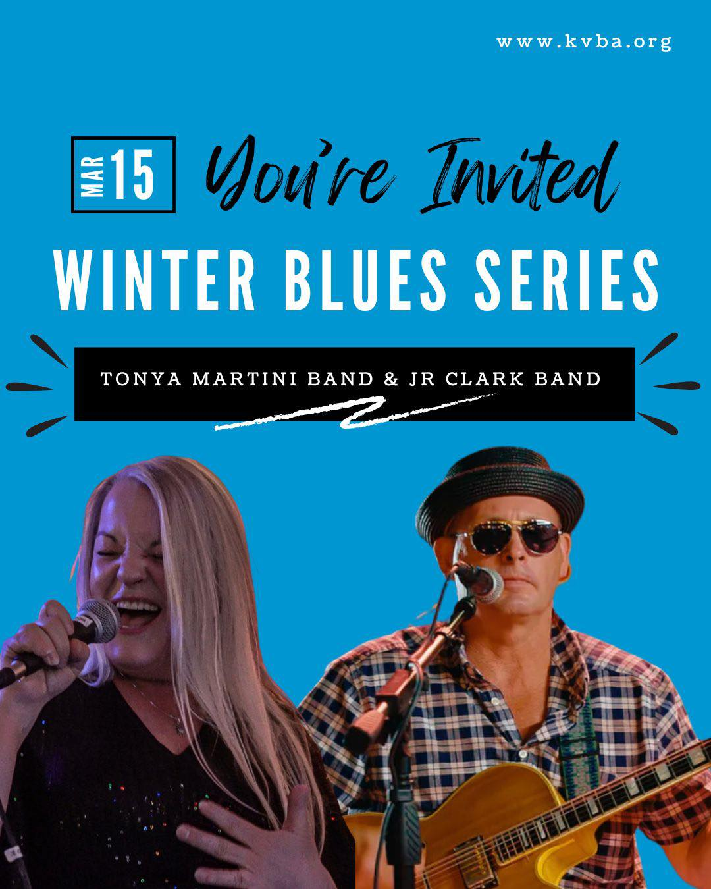
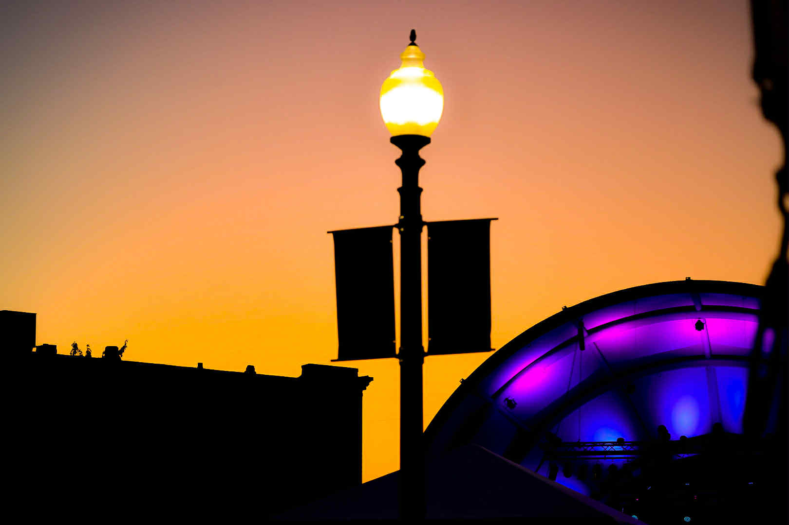

Kalamazoo Valley Blues Artists
These artists regularly perform at KVBA events and blues jams throughout the region. Click through to find them on social media and catch them live.

Tonya Martini Band
Powerful vocals and soulful delivery make Tonya Martini one of the most captivating performers in the Kalamazoo blues scene. A Winter Blues Series staple.

JR Clark Band
Sharp guitar work and tight grooves define the JR Clark Band. A regular at Winter Blues Series and KVBA events around the valley.
Out of Favor Boys
A beloved Kalamazoo act blending traditional blues with roots rock energy. Consistent crowd favorites at Shakespeare's and KVBA events.

Jim Klein Band
Jim Klein hosts the beloved monthly Saturday jam at Old Dog Tavern. Steeped in Delta blues tradition, his band brings deep feel and authenticity every time.
Blueback
One of Kalamazoo's most exciting bands, Blueback recently celebrated a CD release at Crawlspace Theater. Contemporary blues with serious chops.

The Cats
The Cats host the legendary Wednesday blues jam at Shakespeare's Lower Level. The beating heart of the Kalamazoo open-jam tradition.
Get Listed on KVBA
KVBA supports the entire local blues community. If you're a blues musician or band based in Southwest Michigan, we'd love to feature you here.
Contact Us